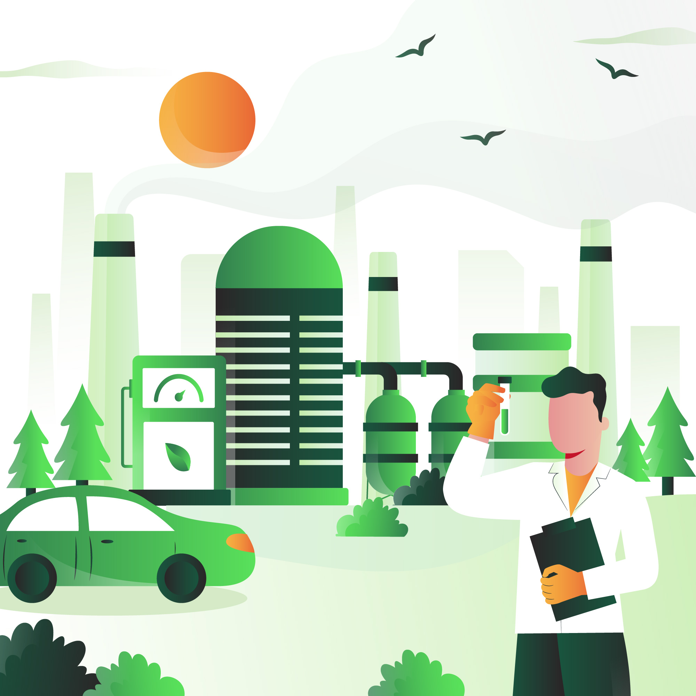
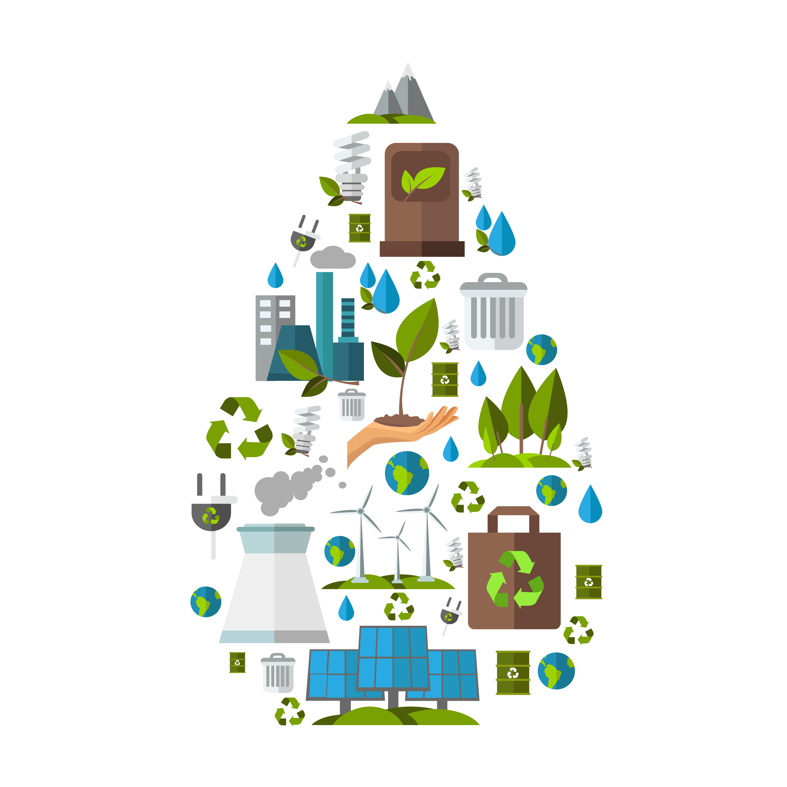

Sensors
Temperature Sensor
Loading...
Humidity Sensor
Loading...
Environmental monitoring is a tool to assess environmental conditions and trends, support policy development and its implementation, and develop information for reporting to national policymakers, international forums and the public.
Over the past decade, only a few countries of Europe and Central Asia have been able to maintain existing monitoring activities. The monitoring of urban air pollution — an important human health risk — is poor in many cities of the subregion. Solid and hazardous waste monitoring is weak and industrial emissions are also not well monitored, reducing the effectiveness of policy instruments such as emissions charges and fines. Monitoring of transboundary air pollution also needs strengthening. Moreover, many European and Central Asian countries lack uniform national methodologies across different monitoring areas, and their classification systems are often incompatible with international standards.
Air Monitoring
Air pollutants are known for their adverse effects on human health and ecosystems. Some of these pollutants also erode technical infrastructure and cultural monuments. Emissions of nitrogen oxides and non-methane volatile organic compounds are the main causes of the formation of ground-level ozone, which has adverse effects on human health and ecosystems. The air pollutants indicator assesses pressures from specific pollutants on atmospheric air across individual countries, but also identifies pressures from particular national sectors like energy, transport, industrial processes, agriculture and waste management.
Water Monitoring
Renewable freshwater resources have major environmental and economic value. Their distribution varies widely among and within countries. Pressures on freshwater resources are exerted by overexploitation and by pollution. Relating resources abstraction to renewal of stocks is a central issue in sustainable freshwater resource management. If a significant share of a country's water comes from transboundary rivers, tensions between countries can arise, especially if water availability in the upstream country is greater than in the downstream one. Countries are quite interdependent with regard to water resources.
Biodiversity
Sustainable development depends on a sound environment, which in turn depends on ecosystem diversity. Protected areas, especially the full range of International Union for Conservation of Nature (IUCN) Protected Area Categories, are essential for conserving biodiversity and contributing to sustainable development.
The biodiversity indicator provides a means to measure the response to the degradation of ecosystems and the loss of biodiversity in a country. It demonstrates the extent to which areas important for conserving biodiversity, cultural heritage, scientific research, recreation, natural resource maintenance and other environmental values are protected from incompatible uses.
Remote Sensing
Remote sensing can play an important role in monitoring and reporting on environmental problems, in particular when the target of such observations is to assess pollutant effects at large space scales over long time periods — i.e., at the regional, continental or even global scale over the entire seasonal cycle for a number of years.
Remote sensing can provide complementary information to existing ground-based environmental monitoring systems. It can be used to meet the need for timely information and can provide synoptic cross-boundary information. Data and information obtained through Earth observation can be used within geographic information systems for overlay and comparison with other geo-referenced information.